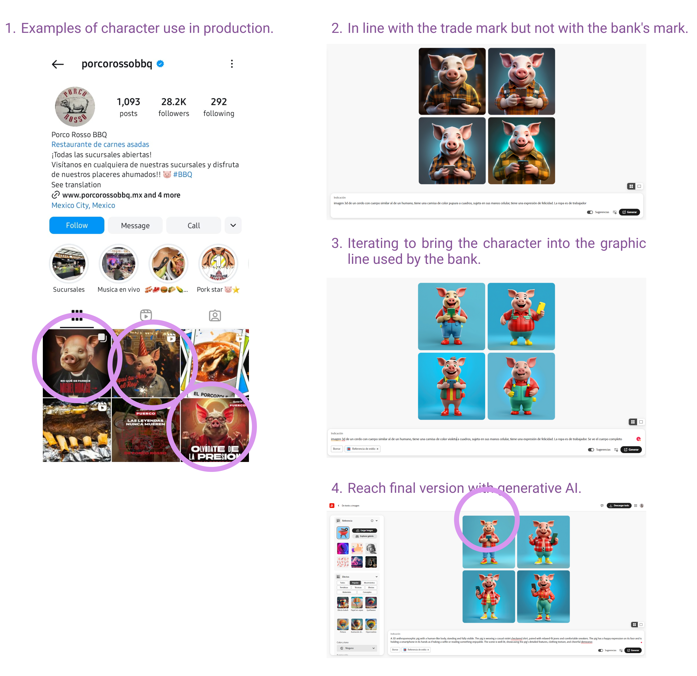

AI-Powered Design for Data-Driven Campaigns
Leveraging AI and transaction data, I designed personalized campaigns for financial institutions, creating tailored user experiences that drive engagement and align with real customer behavior.
Leveraging AI and transaction data, I designed personalized campaigns for financial institutions, creating tailored user experiences that drive engagement and align with real customer behavior.
This document provides an overview of our team's engagement and collaborative strategies in developing artificial intelligence solutions. Technical challenges, product definitions, and internal methodologies have been omitted or vaguely described to comply with agreed confidentiality restrictions. The included images have been carefully selected or edited to adhere to this non-disclosure agreement, ensuring that the project's essence and the integrity of the proprietary information remain protected.
For this project, I worked with a leading fintech client in Mexico to design a data-driven social media content calendar aimed at promoting select businesses where their cardholders frequently transacted. The campaign combined AI-generated visuals with insights drawn from transaction data, creating targeted content that resonated with users on social media and within the banking app. The focus was on increasing user engagement through timely, relevant promotions based on user behavior.
The fintech client aimed to boost user engagement and encourage spending at specific partner businesses. The key objectives were to identify which merchants within the agreement were most frequented by cardholders, determine the best days to publish content based on transaction data, and create visually appealing content that was optimized for both social media and the app while aligning with the financial technology company’s brand identity.
To achieve this, I needed to create a campaign that would be both strategically timed and visually compelling, leveraging AI-generated visuals for efficiency and consistency.
For this project, I worked closely with a fintech client that included their growth team, a product designer, and a Product Owner. As the project lead on my side, I collaborated extensively with our commercial team and data team to ensure the campaign's success. I managed the entire process, from initial validation to final delivery, coordinating with the fintech’s stakeholders to align the campaign with their growth objectives while leveraging insights from both teams to inform design and strategic decisions.
The fintech client wanted to boost customer engagement and encourage spending at specific partner businesses. The key objectives were to:
For example, the data showed that Fridays were the days with the highest transaction volume at entertainment venues, while Mondays were the most popular at grocery stores. This helped determine the optimal publishing schedule, ensuring that the content was relevant and appealed to users.
Using the transaction insights, I designed a social media content calendar that aligned with the client’s marketing goals.
To create attractive images quickly and efficiently, I used adobe's AI-based tools to generate the 3D images for the social media posts and app banners. Each image was tailored to the type of business being promoted, for example:
Generative artificial intelligence enabled rapid iterations of these visual elements, ensuring that the content was engaging, visually consistent and adaptable to different platforms (social media and in-app displays).
While generative AI enables faster and more efficient asset creation, it still has limitations, particularly in accurately applying specific colors and brand elements. To ensure the visuals met the required standards, I used Photoshop, Lightroom, and Adobe Illustrator for final refinements and adjustments. Below are some real examples showcasing the polished results.
We collected metrics for each type of content—stories, in-app messages, push notifications, and native displays—to validate the initial data-driven decisions. This allowed us to continuously assess the performance of each proposal and ensure the strategy was effectively engaging users.
Working with this fintech client in Mexico, I was able to create a social media strategy that combined the best of data analytics and AI-driven design. By utilizing transactional data, I ensured that the campaign was timely and relevant, while AI tools helped to streamline the design process, delivering engaging content across multiple channels.
I would love to talk about the challenges, decisions and mistakes that were made during this first stage.
Feel free to talk to me on LinkedIn or by mail.
Abrazo Jo